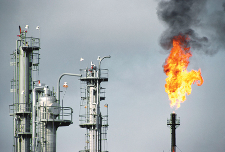

© 2008 Jupiterimages Corporation
In Module 5 you will investigate the structure and properties of hydrocarbon molecules. You will learn about the sources of hydrocarbons, and how these natural resources are developed by society. You will learn about the industries that are involved in the extraction, refining, modification, and manipulation of hydrocarbon molecules. You will build on and apply what you learn in this module to your study of petrochemicals in Module 6.
In Module 5 you will investigate the following questions:
Remember that each lesson will also be organized around questions intended to guide your study. As you proceed through Module 5, you may record answers to these questions and any interrelationships that exist between them in a concept map or graphic organizer. More information is available in the Unit C Concept Organizer. In the Module 5 Summary you will receive further information on how you can use your concept map or graphic organizer to review the concepts you studied in this module.